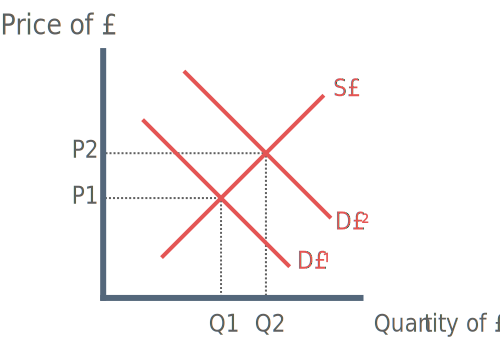
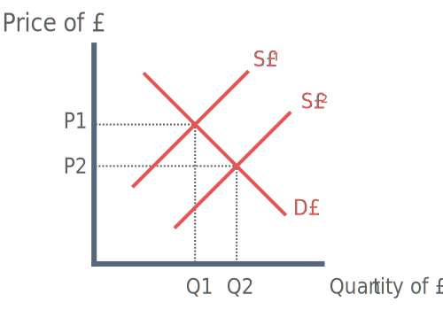

Types of Exchange Rate Systems
1) Freely floating exchange rate system (U.K, U.S, Germany and Sweden)
2) Fixed exchange rate system (Bulgarian Lev)
Factors Causing Exchange Rate Appreciation

1) Higher interest rates (relative to other countries)
Higher interest rates make deposits in the UK more attractive (“hot money flows”), this increases demand for pounds and causes an appreciation.
2) Low Inflation
Countries with lower inflation rates see exports increase thus demand for pounds increases and an appreciation in the value of their currency occurs.
3) Foreign direct investment (FDI)
If another country wishes to invest in the U.K. they must aquire pounds. This causes an increase in demand for pounds and therefore an appreciation of the pound.
4) Positive speculator expectations
If speculators believe the sterling will rise they demand more pounds to make profit in future, this increases demand for pounds and causes appreciation.
5) Rise in incomes abroad
If households in foreign countries become richer they will consumer more goods and services. Foreign consumption may leak into U.K. goods and servies thus increasing demand for £ to purchase british goods causing appreciation.
6) Increase in competitiveness
An increase in competitiveness could arise due to an increase in productivity which results in a better quality products. A better quality product will result in an increase in demand for U.K. goods. Pounds are demanded to aquire these goods, thus causing an appreciation of the pound.
Factors Causing Exchange Rate Depreciation

1) Lower interest rates
2) High inflation
3) Firms move away from Britain (Opposite of FDI)
4) Increase in domestic incomes
If domestic incomes increase, then households have a greater propensity to spend. Some of this spending leaks on imports. In order to purchase imports, households must sell pounds and buy foreign currencies. This increase the supply of pounds and causes depreciation.